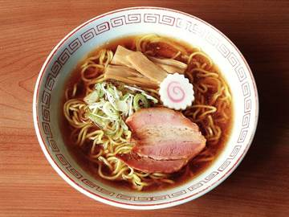
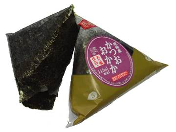

Giorno 1 di 15 · Giovedì 3 dicembre · Kyoto
Arrivo in serata a Kyoto
In sintesi
- 16:25 atterraggio a Osaka KIX, poi Haruka Express.
- ~19:45 check-in a Shijo-Omiya e una cena semplice.
- Nessuna visita: a dicembre alle 16:30 è già buio.
Itinerario
- 16:25Atterraggio a Kansai (KIX) — con immigrazione, bagagli e dogana si esce verso le 17:15-17:30. Il QR di Visit Japan Web vi fa saltare la coda lunga.
- 17:30Biglietto Haruka e ICOCA — alla stazione JR sotto il Terminal 1 (passerella coperta dagli arrivi): il biglietto prenotato online si ritira ai distributori verdi con la carta usata per pagare, e la vostra ICOCA si ricarica alle macchinette accanto.
- 17:50Haruka Express → 75-80 minuti diretti, nessun cambio. Attivate l'eSIM mentre siete ancora fermi.
- 19:10Kyoto Station — l'atrio è un capolavoro di architettura anni '90 e a dicembre ospita un enorme albero di Natale illuminato. Due minuti per guardarlo in su prima di uscire. Qui si decide: o si cena subito al decimo piano, o si va dritti in hotel.
- 19:25Kyoto Station → hotel — l'M's Plus è a Shijo-Omiya, non alla stazione. Metropolitana Karasuma fino a Shijo e poi una sola fermata di Hankyu fino a Omiya, una quindicina di minuti in tutto; oppure un taxi, dieci minuti e ~1.300 yen, che con due valigie e venti ore di viaggio addosso è il modo giusto di spendere otto euro.
- 19:45Check-in in hotel e doccia. Reception aperta 24 ore, quindi nessuna fretta e nessun codice da farsi mandare.
- 20:30Cena vicino all'hotel, se non vi siete già fermati al Ramen Koji di Kyoto Station (vedi sotto). Non cercate il ristorante perfetto: siete svegli da venti ore.
- 21:30A letto presto. Il jet lag vi sveglierà alle 5, ed è esattamente quello che serve domani.
Le tappe su Google Maps
Toccate una tappa e si apre in Google Maps: da lì Indicazioni vi dice treno e binario partendo da dove siete.
La mappa si carica solo se la toccate, per non consumare dati: il tracciato è in auto e serve solo a vedere dove stanno le tappe: gli spostamenti veri sono in treno, come nell'itinerario.
Dove mangiare
- Cena

Kyoto Ramen Koji — al decimo piano di Kyoto Station, nove banchi di ramen di regioni diverse (tonkotsu di Hakata, miso di Sapporo). Si ordina al distributore all'ingresso di ogni locale. ~1.000 yen, aperto fino alle 22. È dentro Kyoto Station: conviene fermarsi qui prima di proseguire verso l'hotel, non tornare indietro dopo. - Vicino all'hotelShijo-Omiya è un incrocio vivo: intorno alla stazione ci sono izakaya, catene di ramen e gyoza aperte tardi. Niente di memorabile, ma stasera va benissimo.
- Se è troppo tardi

il konbini sotto l'hotel: un onigiri e una zuppa calda dopo venti ore di viaggio sono più che dignitosi.
Note e dritte
Perché non c'è nient'altro. Il QR802 tocca terra alle 16:25 e a dicembre il sole a Kyoto tramonta verso le 16:45: qualunque tempio sarebbe già chiuso prima ancora che usciate dall'aeroporto. Trattatela come una serata di trasferimento, non come una giornata persa — il giorno dopo partite all'alba.
Le tre cose da non dimenticare: compilare Visit Japan Web prima di lasciare Roma, ricaricare la vostra ICOCA (vi servirà per due settimane, anche a Tokyo), e salvare sul telefono l'indirizzo dell'hotel in giapponese — 京都市中京区錦大宮町114 — da mostrare al tassista.
Se avete ancora energia: non salite sulla Kyoto Tower. Di viste dall'alto ne fate due in tutto il viaggio ed è giusto spenderle su Umeda e su Shibuya, non su un osservatorio da 900 yen alla fine di venti ore di volo. Meglio i dieci minuti a piedi da Shijo-Omiya lungo Omiya-dori: è il quartiere dove dormite sette notti, tanto vale sapere dov'è il konbini, dov'è la lavanderia e a che ora chiude il ramen sotto casa.
Se oggi non gira. Già libero Non c'è niente da liberare: oggi è solo un trasferimento e l'unico impegno è il treno da KIX. Se siete distrutti saltate anche il ramen di Kyoto Station e prendete un onigiri al konbini sotto l'hotel.